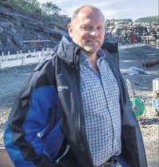

Trygve Jonny Sandvik
M, #13877, f. 10 september 1964, d. 5 november 2021
Foreldre
Familie: Sissel Johanne Stoum (f. 16 januar 1964)
| Sønn | Johan Stoum Sandvik (f. 7 februar 1987) |
| Sønn | Håvard Stoum Sandvik (f. 16 mai 1990) |

Trygve Jonny Sandvik
Biografi
Trygve Jonny Sandvik ble født den 10 september 1964 på/i Steinkjer, Nord-Trøndelag. Han giftet seg med Sissel Johanne Stoum i 1987. Han og Sissel Johanne Stoum ble skilt. Han døde i hjemmet den 5 november 2021 på/i Jøa, Namsos, Trøndelag.
Trygve Jonny Sandvik bodde på/i Jøa, Fosnes, Nord-Trøndelag. Trygve ble i februar 2018 operert for kreft. Senere ble det konstatert spredning, og han måtte igjennom en cellegiftkur. Han ble bisatt den 17 november 2021 Namsos kulturhus, Namsos, Trøndelag.
| Sist redigert |
15 juli 2022 21:33:14 |
| Slektskap | 5-menning 1 gang forskjøvet til Håkon Wahl
7-menning til Lovise Julie Eggan |
Ragnvald Faksdal
M, #13884, f. 6 april 1908, d. 7 oktober 1991
Foreldre
Familie: Margit Dille (f. 13 september 1915, d. november 2003)
| Sønn | Reidar Faksdal+ (f. 25 desember 1937, d. 25 juni 2018) |
| Datter | Målfrid Faksdal+ (f. 25 desember 1937, d. 8 mars 2014) |
| Datter | Ingeborg Astrid Faksdal+ (f. 25 oktober 1945) |
Biografi
Ragnvald Faksdal ble født den 6 april 1908 på/i Fosnes, Nord-Trøndelag. Han giftet seg med
Margit Dille den 27 juni 1937. Han døde den 7 oktober 1991. Han ble gravlagt den 15 oktober 1991 på/i Dun kirkegård, Jøa, Fosnes, Nord-Trøndelag.
Ragnvald Faksdal kjøpte Duun 45/2, Duun; Jøa, Fosnes, Nord-Trøndelag.
| Sist redigert |
19 september 2010 00:00:00 |
| Slektskap | 6-menning 1 gang forskjøvet til Lovise Julie Eggan |
Margit Dille
K, #13885, f. 13 september 1915, d. november 2003
Foreldre
Familie: Ragnvald Faksdal (f. 6 april 1908, d. 7 oktober 1991)
| Sønn | Reidar Faksdal+ (f. 25 desember 1937, d. 25 juni 2018) |
| Datter | Målfrid Faksdal+ (f. 25 desember 1937, d. 8 mars 2014) |
| Datter | Ingeborg Astrid Faksdal+ (f. 25 oktober 1945) |
Biografi
Margit Dille ble født den 13 september 1915 på/i Fosnes, Nord-Trøndelag. Hun giftet seg med
Ragnvald Faksdal den 27 juni 1937. Hun døde i november 2003. Hun ble gravlagt den 4 desember 2003 på/i Dun kirkegård, Jøa, Fosnes, Nord-Trøndelag.
Margit Dille was also known as Margit Faksdal.
| Sist redigert |
11 januar 2012 00:00:00 |
Kristen Ingolf Dille
M, #13886, f. 6 september 1889, d. 15 desember 1971
Foreldre
Biografi
Kristen Ingolf Dille ble født den 6 september 1889 på/i Fosnes, Nord-Trøndelag. Han giftet seg med
Astrid Kristine Strøm. Han døde den 15 desember 1971. Han ble gravlagt på/i Fosnes kirkegård, Fosnes, Nord-Trøndelag.
| Sist redigert |
19 september 2010 00:00:00 |
Astrid Kristine Strøm
K, #13887, f. 19 januar 1889, d. 7 juni 1972
Foreldre
Biografi
Astrid Kristine Strøm ble født den 19 januar 1889 på/i Letvik, Fosnes, Nord-Trøndelag. Hun giftet seg med
Kristen Ingolf Dille. Hun døde den 7 juni 1972. Hun ble gravlagt på/i Fosnes kirkegård, Fosnes, Nord-Trøndelag.
Astrid Kristine Strøm was also known as Astrid Kristine Dille.
| Sist redigert |
11 januar 2012 00:00:00 |
Anette Regine Isakdatter Juul
K, #13898, f. 9 mai 1857, d. 12 april 1929
Foreldre
Biografi
Anette Regine Isakdatter Juul ble født den 9 mai 1857 på/i Ramstad, Nærøy, Nord-Trøndelag. Hun giftet seg med
Tobias Iversen den 16 juni 1881 på/i Nærøy, Nord-Trøndelag. Hun døde av hjerneblødning den 12 april 1929 på/i Jøa, Fosnes, Nord-Trøndelag. Hun ble gravlagt den 23 april 1929 på/i Fosnes, Nord-Trøndelag.
Anette Regine Isakdatter Juul was also known as Anette Regine Faksdal. Hun had reference number Barnløs. Hun ble døpt den 21 juni 1857 på/i Nærøy, Nord-Trøndelag. Hun ble konfirmert den 7 juli 1872 på/i Lundring kirke, Nærøy, Nord-Trøndelag
+.
| Sist redigert |
16 juli 2022 22:57:49 |
| Slektskap | Søskenbarn 4 ganger forskjøvet til Håkon Wahl |
Tobias Iversen
M, #13899, f. 9 februar 1852
Foreldre
Biografi
Tobias Iversen ble født den 9 februar 1852 på/i Faksdal; Jøa, Fosnes, Nord-Trøndelag. Han giftet seg med
Anette Regine Isakdatter Juul den 16 juni 1881 på/i Nærøy, Nord-Trøndelag. Han døde på/i Jøa, Fosnes, Nord-Trøndelag.
Tobias Iversen was also known as Tobias Faksdal. Han had reference number Barnløs. Han ble konfirmert i 1867 på/i Fosnes, Nord-Trøndelag. Han bodde i 1910 på/i Lilleenget 46/6, Faksdal; Jøa, Fosnes, Nord-Trøndelag.
| Sist redigert |
24 mai 2017 00:00:00 |
Anton Julius Isaksen Juul
M, #13900, f. 9 mai 1862, d. 5 juli 1926
Foreldre
Biografi
Anton Julius Isaksen Juul ble født den 9 mai 1862 på/i Ramstad, Nærøy, Nord-Trøndelag. Han giftet seg med
Julie Mathilde Nilsdatter Vestgård i 1888. Han døde den 5 juli 1926 på/i Ramstad, Nærøy, Nord-Trøndelag.
| Sist redigert |
11 januar 2012 00:00:00 |
| Slektskap | Søskenbarn 4 ganger forskjøvet til Håkon Wahl |
{kind=link}